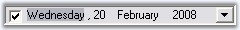

This section illustrates the solutions for various task-based queries about the control.
We can make the control read only by setting ReadOnly property to true. DateTimePickerAdv control have an option to change the date, even in ReadOnly mode using Arrow keys. Set ReadOnlyValueChange property to true to effect this setting.
|
[C#]
this.dateTimePickerAdv1.ReadOnly = true; this.dateTimePickerAdv1.ReadOnlyValueChange = true; |
|
[VB.NET]
Me.dateTimePickerAdv1.ReadOnly = True Me.dateTimePickerAdv1.ReadOnlyValueChange = True |

Figure 287: DateTimePickerAdv in ReadOnly Mode
We can display the Calendar programmatically on a button click. The DisplayCalendar method should be called from the click event handler in order to show the control.
|
[C#]
private void button1_Click(object sender, System.EventArgs e) { // Shows the calendar. this.dateTimePickerAdv1.DisplayCalendar(); } |
|
[VB.NET]
Private Sub button1_Click(ByVal sender As Object, ByVal e As System.EventArgs)
' Shows the calendar. Me.dateTimePickerAdv1.DisplayCalendar() End Sub |
CalendarDateChanged event is raised when a date in the DateTimePickerAdv is changed using the keys, or using the mouse.
|
[C#]
this.dateTimePickerAdv1.Calendar.DateChanged += new EventHandler(Calendar_DateChanged);
void Calendar_DateChanged(object sender, EventArgs e) { Console.WriteLine("Date Changed"); } |
|
[VB.NET]
Me.dateTimePickerAdv1.Calendar.DateChanged += New EventHandler(Calendar_DateChanged)
Private Sub Calendar_DateChanged(ByVal sender As Object, ByVal e As EventArgs) Console.WriteLine("Date Changed") End Sub |
When the month in the DateTimePickerAdv is changed using Arrow button, ValueChanged event is raised.
|
[C#]
this.dateTimePickerAdv1.ValueChanged += new EventHandler(dateTimePickerAdv1_ValueChanged);
private void dateTimePickerAdv1_ValueChanged(object sender, EventArgs e) { if (Control.MouseButtons != MouseButtons.None) { Console.WriteLine("Month Changed using ArrowButton"); } } |
|
[VB.NET]
Me.dateTimePickerAdv1.ValueChanged += New EventHandler(dateTimePickerAdv1_ValueChanged)
Private Sub dateTimePickerAdv1_ValueChanged(ByVal sender As Object, ByVal e As EventArgs) If Control.MouseButtons <> MouseButtons.None Then Console.WriteLine("Month Changed using ArrowButton") End If End Sub |
If you want to close the DateTimePickerAdv's drop-down, when you hit the ENTER key or the ESC key, you need to set DateTimePickerAdv.WantEnterKey property to false.
|
Property |
Description |
|
WantEnterKey |
True – Drop-down is not closed when hitting the Enter key or Esc key
False – Drop-down will get closed when hitting the Enter key or Esc key |
|
[C#]
this.dateTimePickerAdv1.Calendar.WantEnterKey = false; |
|
[VB.NET]
Me.dateTimePickerAdv1.Calendar.WantEnterKey = False |